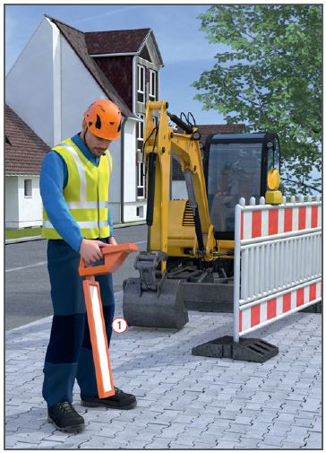
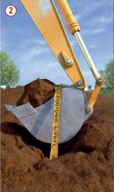
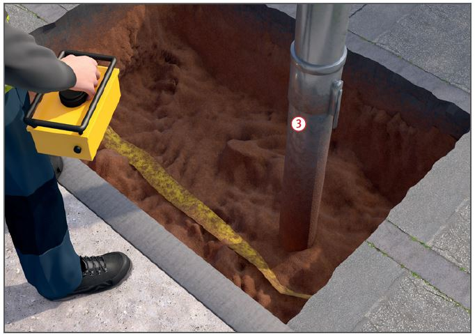

Gefährdungen
- Durch beschädigte erdverlegte Leitungen können Personen verletzt werden.
Allgemeines
- Vor Baubeginn Informationen über Lage und Schutzabstände von den Leitungseigentümern, z. B. Netzbetreiber, Deutsche Telekom, Tiefbauamt, einholen und beteiligte Mitarbeiter und Firmen informieren.
- Telefonnummern von Leitungsbetreibern (Störungsdienste), Behörden (Umweltamt, Wasserbehörde, Tiefbauamt), Polizei und Feuerwehr bereithalten.
- Beim Antreffen unbekannter Leitungen sofort Arbeiten einstellen und Auftraggeber oder Leitungsbetreiber informieren.
- Vorhandene Schachtdeckel, Schieberkappen usw. stets freihalten.
- Beim Beschädigen einer Leitung Arbeiten sofort einstellen, wenn erforderlich den Gefahrbereich z. B. absperren und zuständige Stellen (Leitungsbetreiber, Polizei, Feuerwehr) informieren. Passanten, Hausbewohner warnen und unbefugte Personen fernhalten.

Schutzmaßnahmen
- Zum Auffinden von Leitungen Ortungsgeräte
 einsetzen oder Suchgräben herstellen. Im vermuteten Leitungsbereich Saugbagger einsetzen
einsetzen oder Suchgräben herstellen. Im vermuteten Leitungsbereich Saugbagger einsetzen  oder in Handschachtung mit der Schaufel arbeiten.
oder in Handschachtung mit der Schaufel arbeiten.
- Vorhandenen Leitungsverlauf eindeutig kennzeichnen und Schutzstreifen von 1,0 m in Längsachse berücksichtigen.
- Beim Aushub auf Schutzabdeckung oder Warnbänder
 sowie auf Hinweisschilder für Versorgungsleitungen/Schieberschilder, Kabelmerksteine u. Ä. im Boden achten.
sowie auf Hinweisschilder für Versorgungsleitungen/Schieberschilder, Kabelmerksteine u. Ä. im Boden achten.
- Kabel sind als unter Spannung stehend zu betrachten, bis der Betreiber (schriftlich) die Spannungsfreiheit bestätigt.
- Maschinellen Aushub nur bis zu einem Abstand durchführen, der eine Gefährdung der erdverlegten Leitung ausschließt.

- Freilegen der erdverlegten Leitung in Handschachtung oder mit z. B. Saugbaggern .
- Schutzabstände und Kabelschutzanweisungen der jeweiligen Leitungsbetreiber beachten.
- Bei horizontalen Bohrungen, Pressungen und Rammungen (auch bei Verdrängungshämmern [Durchschlagsraketen]) können Hindernisse im Boden (Steine, Fels, Beton oder Stahl) zu Richtungsabweichungen führen.
- Sicherheitsabstand zu vorhandenen Leitungen einhalten.
Zusätzliche Hinweise für kreuzende Leitungen
- Rohre, Kabel, Isolierungen und Anschlüsse sichern und vor Beschädigungen durch Baggergreifer, Werkzeug, pendelnde Rohre, herabfallende Gegenstände, z.B. Steinbrocken, Stahlträger, Verbauteile, schützen.
- Vorsicht bei stillgelegten Leitungen! Alte Gasleitungen können noch Gas führen. Alte Stromleitungen prüfen lassen.
Zusätzliche Hinweise für Daten- und Elektroleitungen
- Nutzung von spitzen oder scharfen Werkzeugen, nur bis zu den Abständen, welche die Verteilungsnetzbetreiber (VNB) vorgeben.
- Innerhalb dieser Abstände nur "stumpfe Geräte" z. B. Schaufeln einsetzen.
- Abfangungen, Unterstützungen und Umverlegungen von Elektroleitungen nur vom Verteilungsnetzbetreiber (VNB), ehemals Energieversorgungsunternehmen durchführen lassen.
- Beim Stromübertritt im Schadensfall ist Folgendes zu beachten:
- Gerät aus dem Gefahrbereich bringen,
- sollte dies nicht möglich sein, darf der Geräteführer den Führerstand nicht verlassen,
- Außenstehende auffordern, Abstand zu halten,
- veranlassen, dass der Strom abgeschaltet wird.
Zusätzliche Hinweise für Gasleitungen
- Bei Beschädigungen (auch geringsten Verformungen) oder Gasgeruch
- Feuer und Funkenbildung vermeiden,
- Netzbetreiber umgehend informieren,
- Zündquellen beseitigen,
- Motoren abstellen,
- keine elektrischen Schalter betätigen,
- keine Kabelstecker ziehen.
- Arbeitsbereich auf ausströmendes Gas überprüfen.
Zusätzliche Hinweise für Wasserleitungen
- Vor Baubeginn Lage der Absperrschieber ermitteln.
07/2021